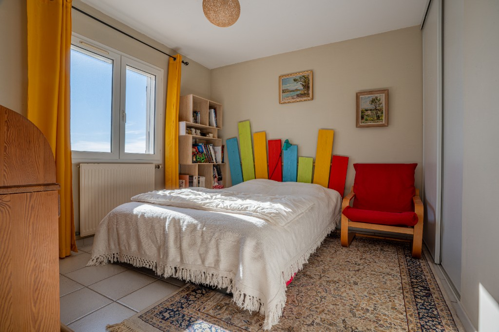

Immobilier
Prix d'une vidéo immobilière à Montpellier
Combien coûte une vidéo pour vendre un bien ? De quoi dépend le tarif, quelles options (drone, HDR, IA) et comment choisir le bon format pour maximiser les visites.
Mariage
Vidéaste de mariage en Occitanie : comment choisir ?
Style documentaire ou cinématique, matériel, prix, feeling humain : les critères essentiels pour trouver le vidéaste qui correspond à votre histoire.

Drone
Drone et immobilier : pourquoi c'est indispensable en 2026
Les vues aériennes transforment la présentation de vos biens. Réglementation 2026, DJI Mini 3 Pro, prix et cas concrets à Montpellier et dans l'Hérault.